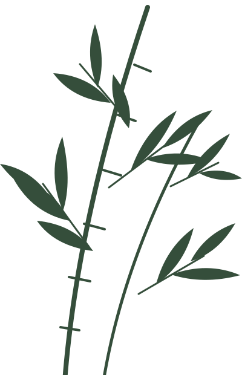
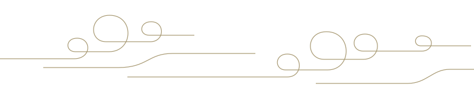

共读
读书分享会 · 筹划中一卷书，一席谈
分享正在读的书，让一个人的阅读，成为一群人的对话。

琢光小序 · 以文会友
「琢」，是对一字一句的认真，是反复推敲的耐心；
「光」，是阅读时的豁然开朗，也是落笔时的微小勇气。
这里是琢光中文文学社。我们因中文相聚，在诗词里遇见远方，在散文里收藏日常，也在彼此的文字中，读懂不一样的青春。
不必等到文笔成熟才开始。带一本喜欢的书，带一个未写完的故事，或者，只带一份好奇。让我们一起，慢慢琢，慢慢发光。
卷贰 · 纸上春秋
试试其他关键词，或回到全部篇目。
这里等待你的第一篇来稿。当前篇目为网站展示示例，非社员真实投稿。

一 笔 一 画 ， 皆 是 心 光“文章千古事，得失寸心知。”
—— 杜甫《偶题》
卷叁 · 雅集有约
分享正在读的书，让一个人的阅读，成为一群人的对话。
从一个词、一段回忆开始，寻找只属于你的表达。
读一首喜爱的诗，在声音与停顿之间，听见中文的韵律。
活动方向预览，具体安排待文学社正式发布。
卷肆 · 同行执笔
无论你是爱读书的人，还是藏着故事的人，
愿这里成为你安放热爱的地方。